packages_to_install <- c("forecast", "ggplot2", "patchwork", "lubridate", "USgas", "tsibble", "fpp2", "fpp3")
packages <- packages_to_install[! packages_to_install %in% installed.packages()[,"Package"]]
if (length(packages) > 0) {
install.packages(packages)
}2 - Analyse graphique
Analyse des séries temporelles avec
L’objectif de ce TP est d’approfondir les analyses graphiques et les transformations pour stabiliser la variance.
Les packages suivants seront utilisés :
library(forecast)
library(ggplot2)
library(patchwork)
library(lubridate)
library(USgas)
library(tsibble)
library(fpp2)
library(fpp3)1 Manipulation graphique
1.1 Analyse graphique temporelle
Le but des prochains exercices est de mettre en pratique les différentes fonctions pour tracer les graphiques vues en cours.
Exercice
En utilisant la fonction help(), décrire les trois séries temporelles gold, woolyrnq et gas du package forecast. Quelles sont les périodicités des séries ?
Tracer les 3 séries. Repérer le point atypique sur la série gold : à quelle observation apparaît-il ? À quelle date cela correspond ?
Indice
On pourra utiliser la fonction which.max() pour repérer le point atypique. La série gold correspond à la série journalière des prix de l’or hors vendredi samedi : pour récupérer les jours correspondants aux numéros des observations, on pourra utiliser la fonction seq.Date() ainsi que la fonction lubridate::wday().
Solution
gold représente les prix journaliers de l’or en dollar (hors vendredi et samedi) entre le 1er janvier 1985 et le 31 Mars 1989. Il semble y avoir des valeurs manquantes, un point atypique autour de l’observation 750. Une tendance plutôt à la hausse jusqu’à cette observation puis une tendance à la baisse. Pas de saisonnalité visible
autoplot(gold, y = "Prix en $",
main = "Prix journaliers de l'or")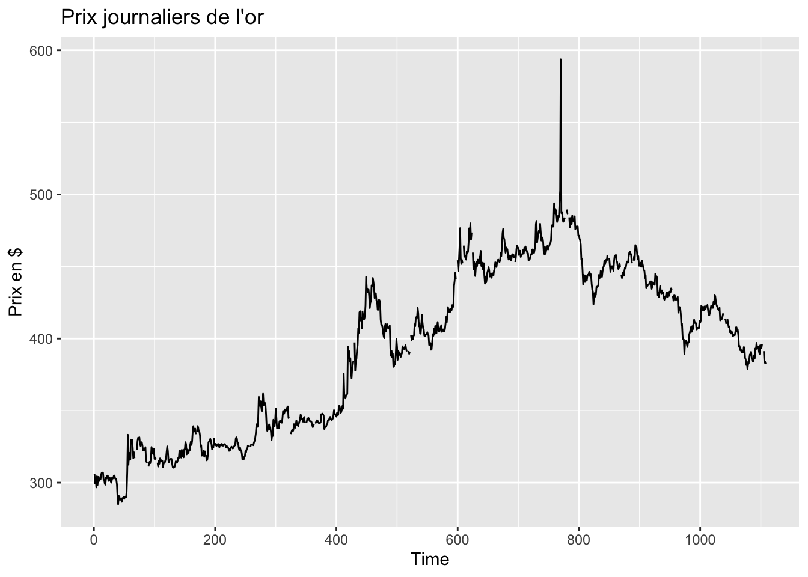
woolyrnq représente la production trimestrielle de laine en Australie (en tonnes) entre le premier trimestre 1965 et le troisième trimestre 1994.
autoplot(woolyrnq, y = "tonnes",
main = "Production trimestrielle de laine en Australie")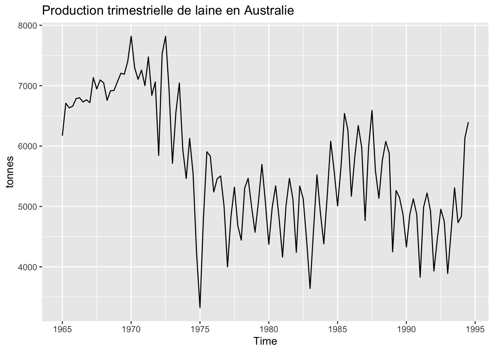
gas représente la production mensuelle de gaz en Australie entre janvier 1956 et août 1995
autoplot(gas, main = "Production mensuelle de gaz en Australie")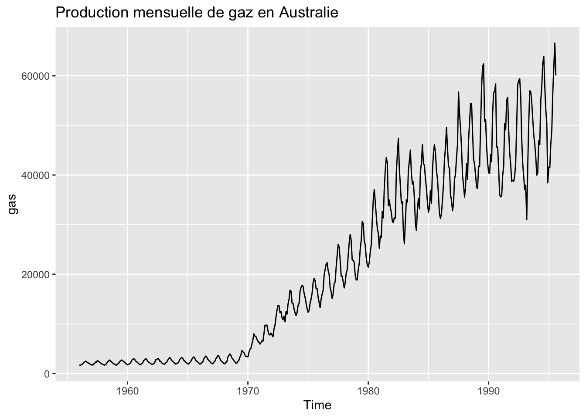
# Point atypique net pour la série gold à l'observation 770
which.max(gold)[1] 770gold[which.max(gold)][1] 593.7dates = seq(from = ymd("1985-01-01"), to = ymd("1989-03-31"), by = "day")
hors_wd = dates[lubridate::wday(dates,week_start = 1) %in% c(1:4,7)] # on ne prend pas les jours 5 et 6 (vendredi et samedi)
length(hors_wd) - length(gold) # on a bien le même nombre d'observations[1] 0hors_wd[which.max(gold)][1] "1987-12-14"
Exercice
Analyser les séries de fpp3::aus_arrivals (arrivées internationales trimestrielles en Australie) : évolution, tendance, saisonnalité et points atypiques (autoplot(), gg_season() et gg_subseries()).
Solution
aus_arrivals %>% autoplot(Arrivals)
Le nombre d’arrivées augmentent avec le temps, sauf ceux en provenance du Japon après 1995. Les séries semblent saisonnières avec une saisonnalité qui dépend du niveau (sauf pour US) et on observe un changement de saisonnalité pour les arrivées en provenance du Japon
aus_arrivals %>% gg_season(Arrivals)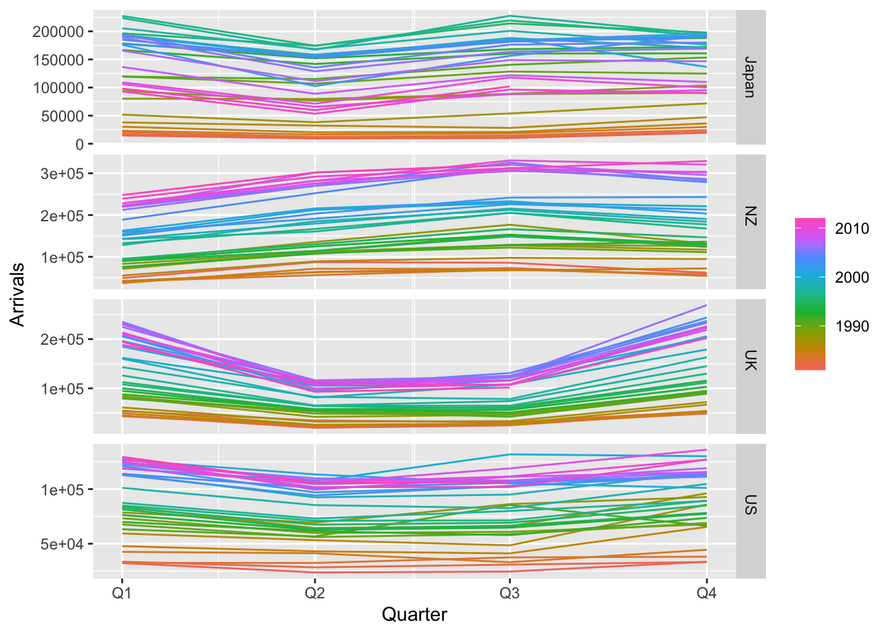
Remarque : le multivarié ne marche pas avec forecast. forecast::ggseasonplot(arrivals) donne une erreur.
La saisonnalité est différente entre chaque pays : arrivées plus élevées aux T1 et T4 pour le Royaume-Uni. elles sont plus faibles au T1 pour la Nouvelle-Zélande et au plus haut au T3. Pour le Japon : plus faibles aux T2 et T4 sur années récentes. Pour les États-Unis le graphique n’est pas facile à lire
aus_arrivals %>% gg_subseries(Arrivals)
Pour le Royaume-Uni la hausse des entrées est surtout saisonnière (forte hausse aux T1 et T3). Depuis les États-Unis et la Nouvelle-Zélande la hausse semble la même sur tous les trimestres.
Plusieurs points atypiques s’observent, par exemple :
- 2000T3 pour les US (JO)
- 2001T3-T4 pour les US (11 septembre)
Exercice
En utilisant les différentes fonctions apprises pour tracer les graphiques (autoplot(), ggseasonplot() et ggsubseriesplot(), gglagplot() et ggAcf()) analyser la série fma::hsales (tendance, saisonnalité, cycle, points atypiques).
Solution
autoplot(hsales)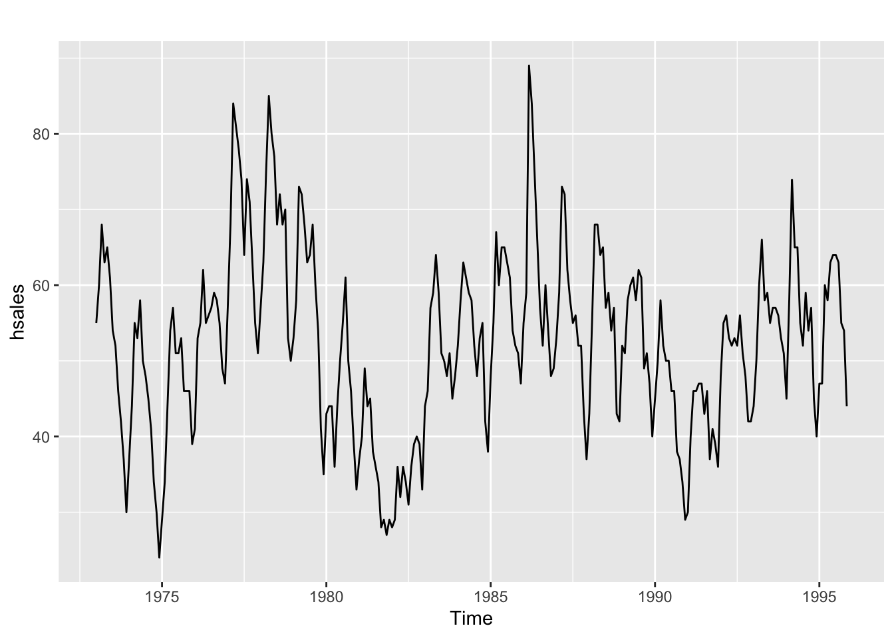
Pas de tendance, il semble il y avoir une saisonnalité et un cycle
ggseasonplot(hsales)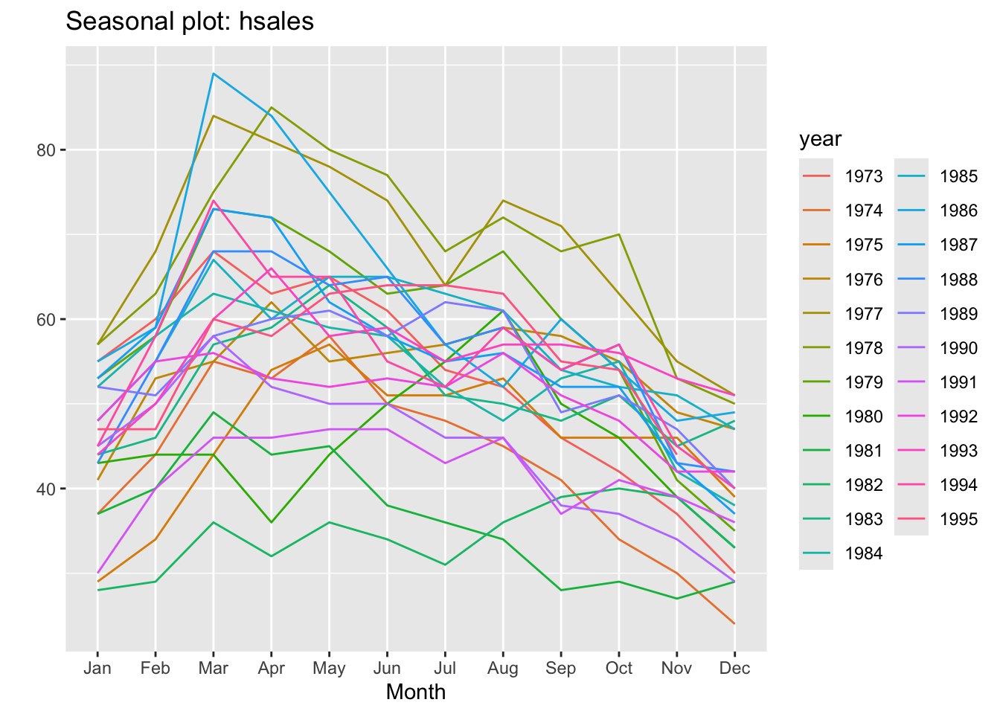
Les ventes semblent plus faibles en janv-déc et plus élevées en mars
ggsubseriesplot(hsales)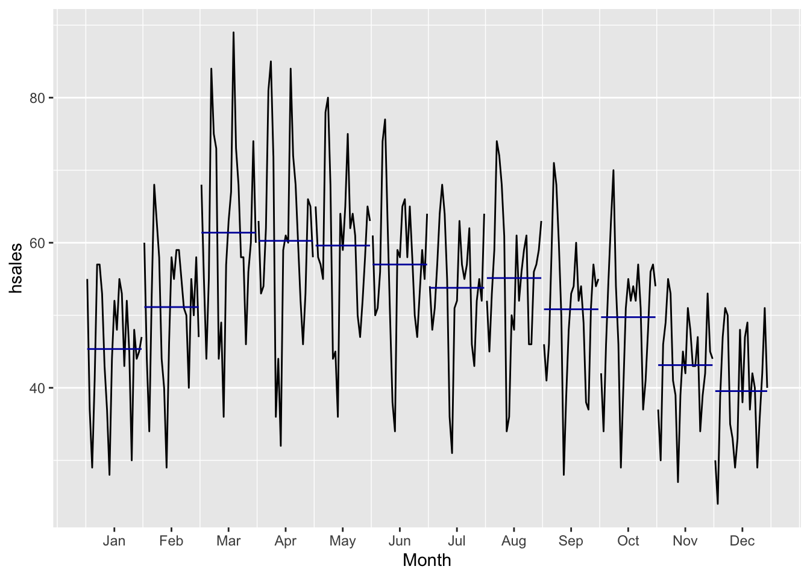
On retrouve en moyenne les résultats précédents mais les variations des coefficients saisonniers laissent penser à un cycle
gglagplot(hsales)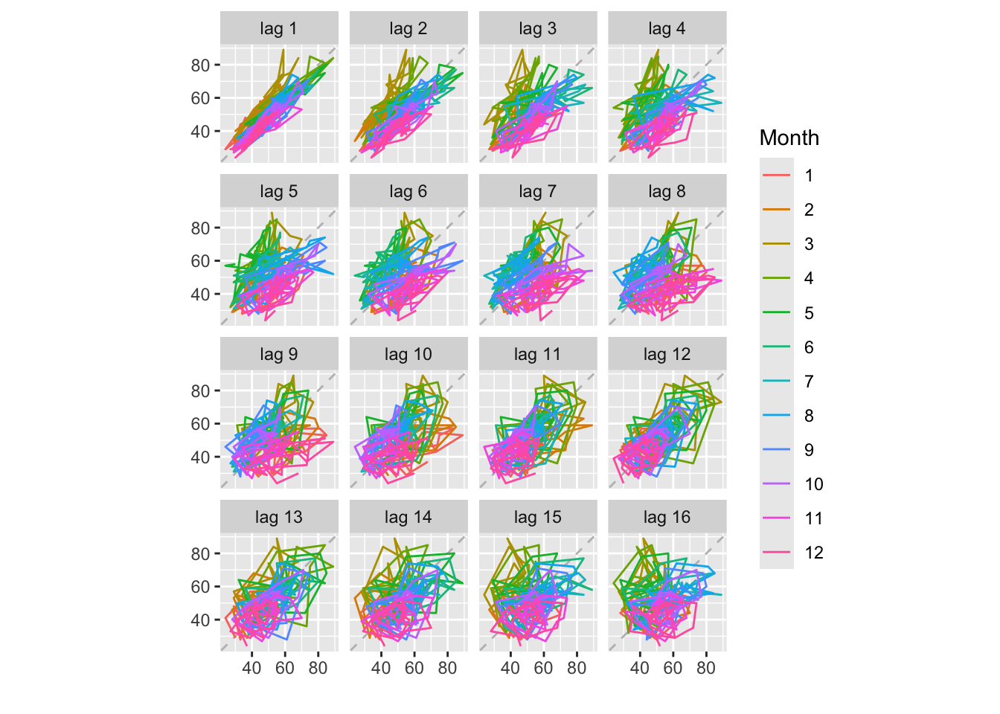
Forte corrélation avec les valeurs précédentes et les valeurs saisonnières
ggAcf(hsales)
ggAcf(hsales, 12*7)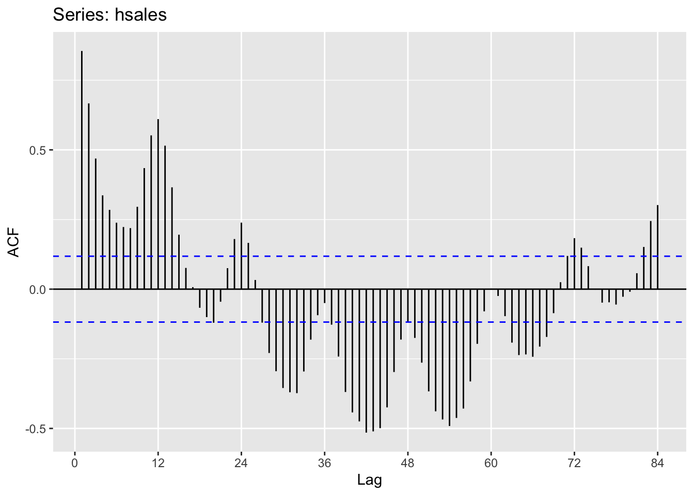
En augmentant le nombre de lag on repère plus facilement les cycles longs (environ 8 ans).
1.2 Densité spectrale
Le but de ces exercices est de calculer les densités spectrales des différentes composantes :
- tendance
- cycle
- saisonnalité
- irrégulier
Attention : par défaut la fonction spectrum enlève une tendance linéaire à la série ! Voir l’aide associée à la fonction ?spectrum.
Exercice
Calculer le périodogramme et le spectre autorégressif d’une tendance.
Indice
Il faut utiliser les paramètres spectrum(., detrend = FALSE, log = "no").
Solution
t = ts(1:100, frequency = 12, start = 2000)
spectrum(t,
detrend = FALSE,
method = "pgram", log = "no")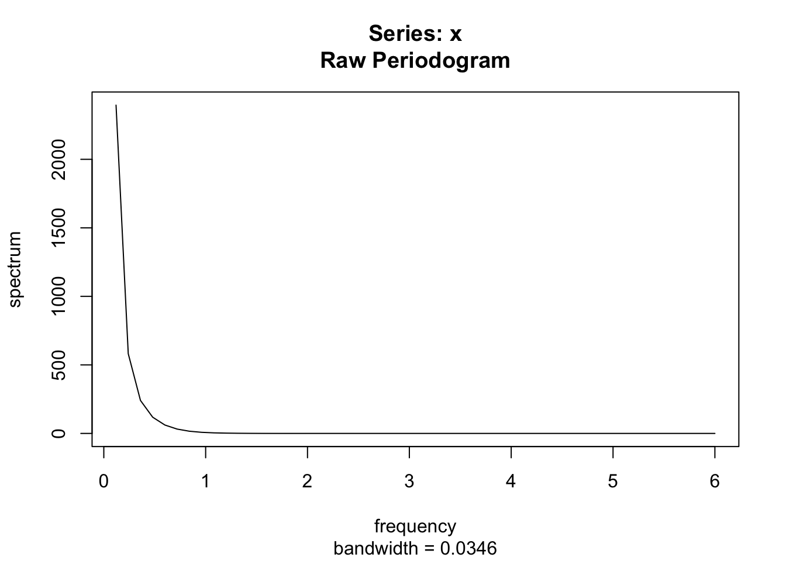
spectrum(t,
method = "ar", log = "no")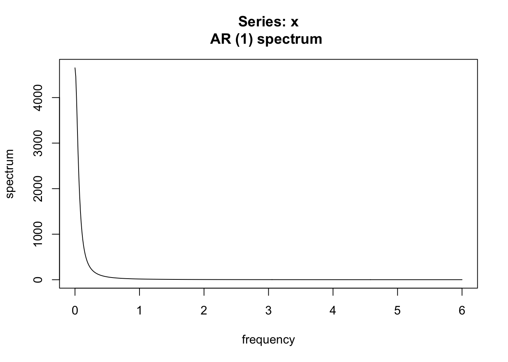
Exercice
Calculer le périodogramme et le spectre autorégressif d’une série mensuelle saisonnière.
Solution
s = ts(0, frequency = 12, start = 2000, end = 2020)
s[cycle(s) == 2] <- 1
spectrum(s,
detrend = FALSE,
method = "pgram", log = "no")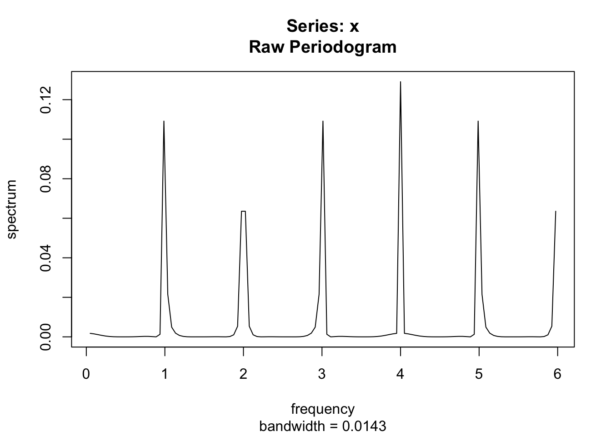
spectrum(s,
method = "ar", log = "no")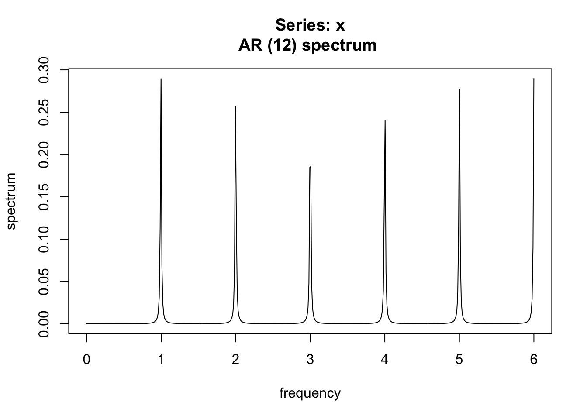
Exercice
Calculer le périodogramme et le spectre autorégressif d’une cycle de 36 mois.
Solution
c = ts(cos(2*pi/36*(1:100)) + sin(2*pi/36*(1:100)), frequency = 12, start = 2000)
spectrum(c,
detrend = FALSE,
method = "pgram", log = "no")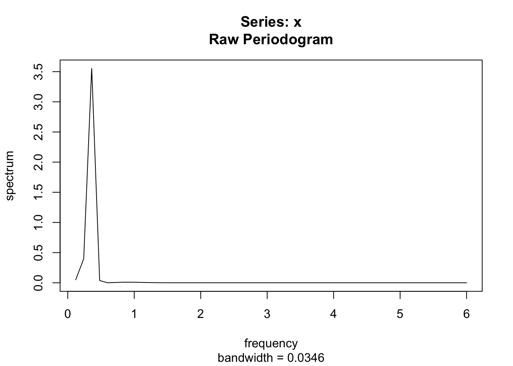
spectrum(c,
method = "ar", log = "no")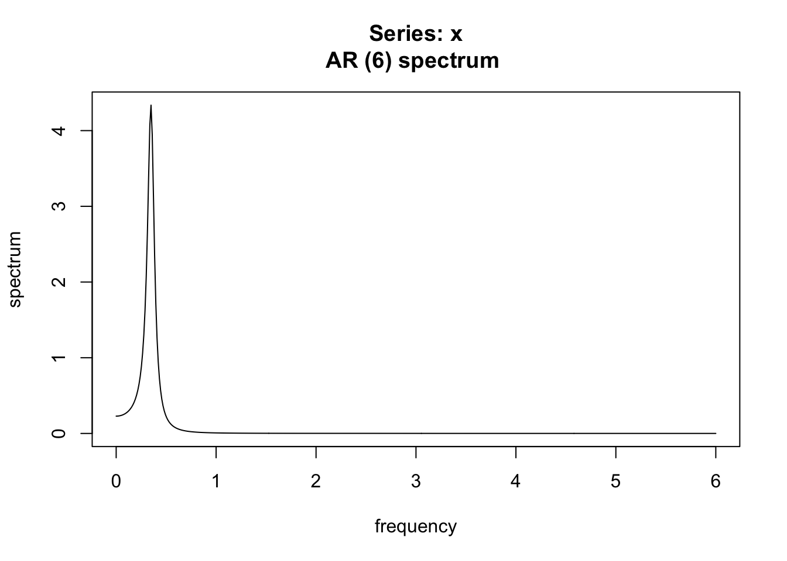
Exercice
Pourquoi a-t-on un spectre différent en simulant un cycle de cette façon ?
c = ts(0, frequency = 12, start = 2000, end = 2020)
c[cycle(c) == 12][c(TRUE, FALSE, FALSE)] <- 1
c Jan Feb Mar Apr May Jun Jul Aug Sep Oct Nov Dec
2000 0 0 0 0 0 0 0 0 0 0 0 1
2001 0 0 0 0 0 0 0 0 0 0 0 0
2002 0 0 0 0 0 0 0 0 0 0 0 0
2003 0 0 0 0 0 0 0 0 0 0 0 1
2004 0 0 0 0 0 0 0 0 0 0 0 0
2005 0 0 0 0 0 0 0 0 0 0 0 0
2006 0 0 0 0 0 0 0 0 0 0 0 1
2007 0 0 0 0 0 0 0 0 0 0 0 0
2008 0 0 0 0 0 0 0 0 0 0 0 0
2009 0 0 0 0 0 0 0 0 0 0 0 1
2010 0 0 0 0 0 0 0 0 0 0 0 0
2011 0 0 0 0 0 0 0 0 0 0 0 0
2012 0 0 0 0 0 0 0 0 0 0 0 1
2013 0 0 0 0 0 0 0 0 0 0 0 0
2014 0 0 0 0 0 0 0 0 0 0 0 0
2015 0 0 0 0 0 0 0 0 0 0 0 1
2016 0 0 0 0 0 0 0 0 0 0 0 0
2017 0 0 0 0 0 0 0 0 0 0 0 0
2018 0 0 0 0 0 0 0 0 0 0 0 1
2019 0 0 0 0 0 0 0 0 0 0 0 0
2020 0 spectrum(c,
method = "pgram", log = "no")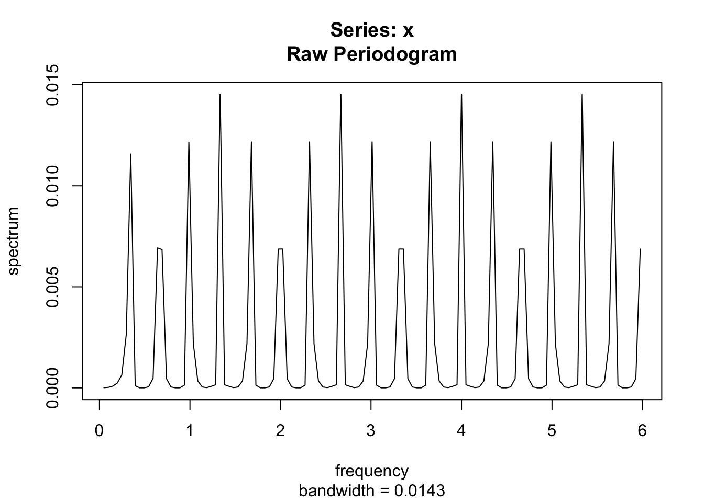
Solution
Car la série construire reste saisonnière (même valeurs dans les mois autres que décembre) !
Exercice
Calculer le périodogramme d’un bruit blanc (utiliser rnorm()).
Solution
set.seed(1)
i = ts(rnorm(100), frequency = 12, start = 2000)
spectrum(i,
detrend = FALSE,
method = "pgram", log = "no")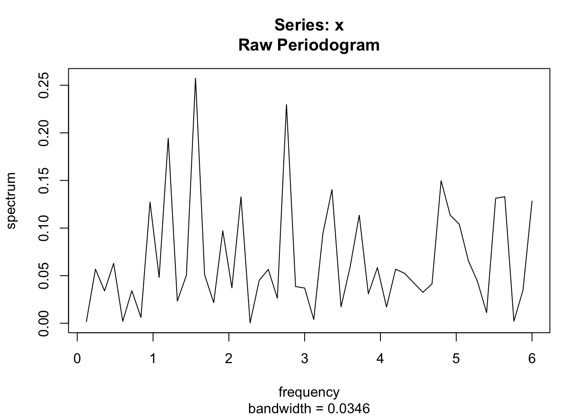
spectrum(i,
method = "ar", log = "no")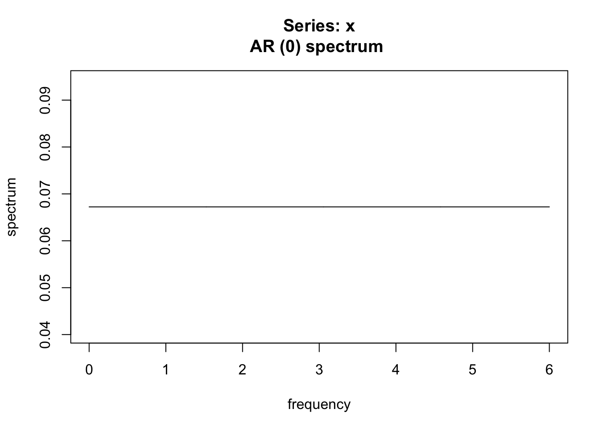
Question supplémentaire : à quoi correspond la droite du graphique précédent ?
Cela correspond à \(\mathbb V[i]/frequence \simeq\) 0,067.
2 Transformation des séries
L’objectif des exercices qui suivent est d’étudier la transformation de Box-Cox \[ f_\lambda(x)=\begin{cases} \log(x)&\text{ si }\lambda=0\\ \frac{sign(x)|x|^\lambda -1}{ \lambda }&\text{ si }\lambda\ne0 \end{cases} \]
Exercice
Pour les séries suivantes, étudier s’il faut faire une transformation de Box-Cox et si oui trouver un \(\lambda\) satisfaisant et vérifier le résultat avec forecast::BoxCox.lambda() : datasets::JohnsonJohnson, datasets::AirPassengers, datasets::co2, fma::usdeaths, expsmooth::usgdp.
Solution
autoplot(JohnsonJohnson)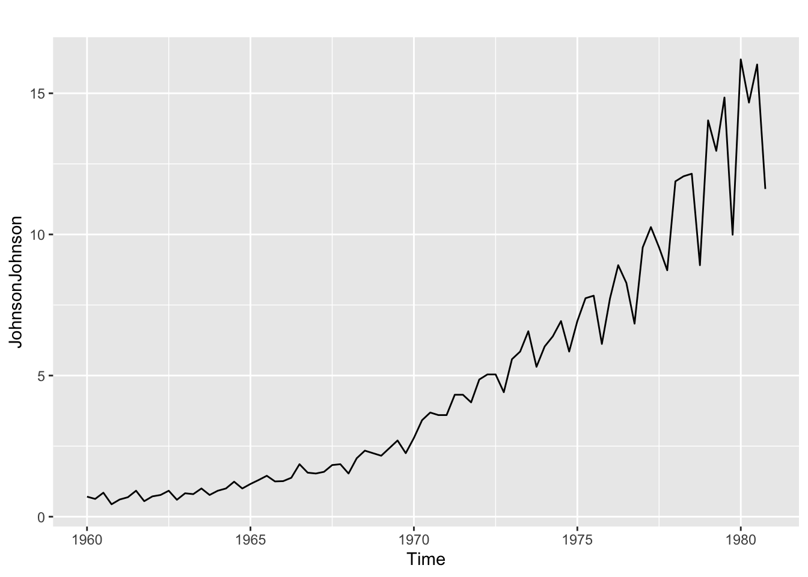
Il semble y avoir une saisonnalité plus importante lorsque la série est élevée et la tendance semble exponentielle.
autoplot(BoxCox(JohnsonJohnson, 0))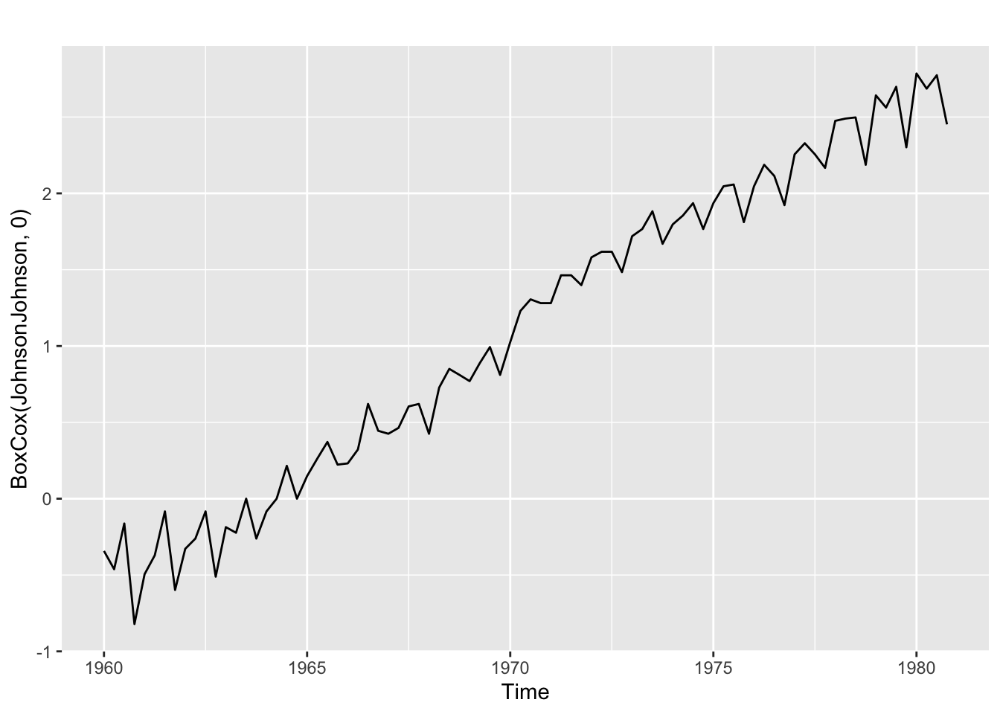
La transformation en log semble trop forte : la variabilité au début de la série est plus importante qu’en fin de série.
(autoplot(BoxCox(JohnsonJohnson, 0.5)) + autoplot(BoxCox(JohnsonJohnson, 0.3))) /
(autoplot(BoxCox(JohnsonJohnson, 0.1)) + autoplot(BoxCox(JohnsonJohnson, 0.2)))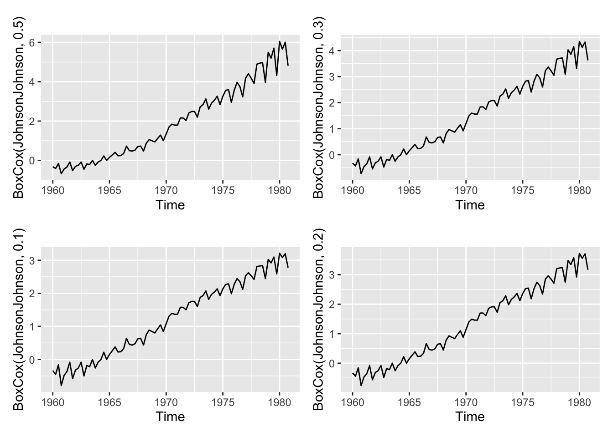
La racine carrée n’est assez forte mais les autres transformations semblent donner de bons résultats. La méthode Guerrero donne \(\lambda = 0,15\).
BoxCox.lambda(JohnsonJohnson)[1] 0.1540752autoplot(AirPassengers)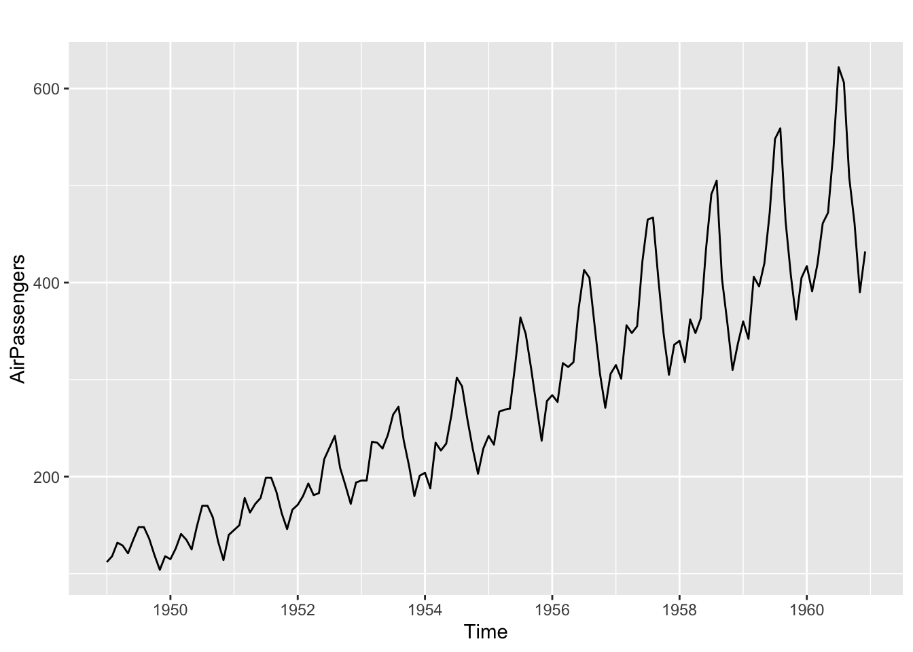
Il semble y avoir une saisonnalité plus importante lorsque la série est élevée .
autoplot(BoxCox(AirPassengers, 0))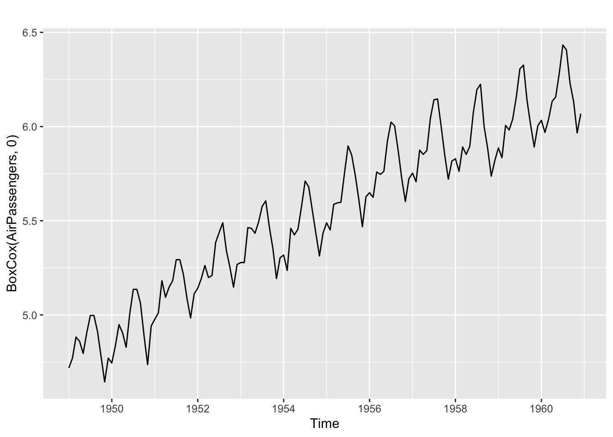
BoxCox.lambda(AirPassengers)[1] -0.2947156autoplot(BoxCox(AirPassengers, BoxCox.lambda(AirPassengers))) + autoplot(log(AirPassengers))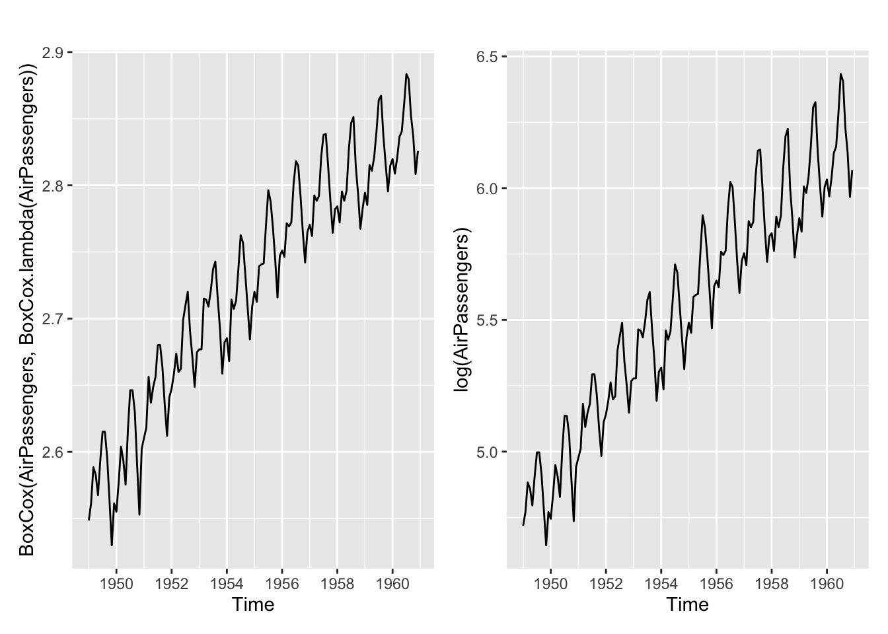
La transformation en log semble suffisante. La méthode Guerrero donne \(\lambda = -0,3\). Le graphique est proche de celui du passage au logarithme : la recommandation est de garder la transformation en logarithme, plus explicable.
autoplot(co2)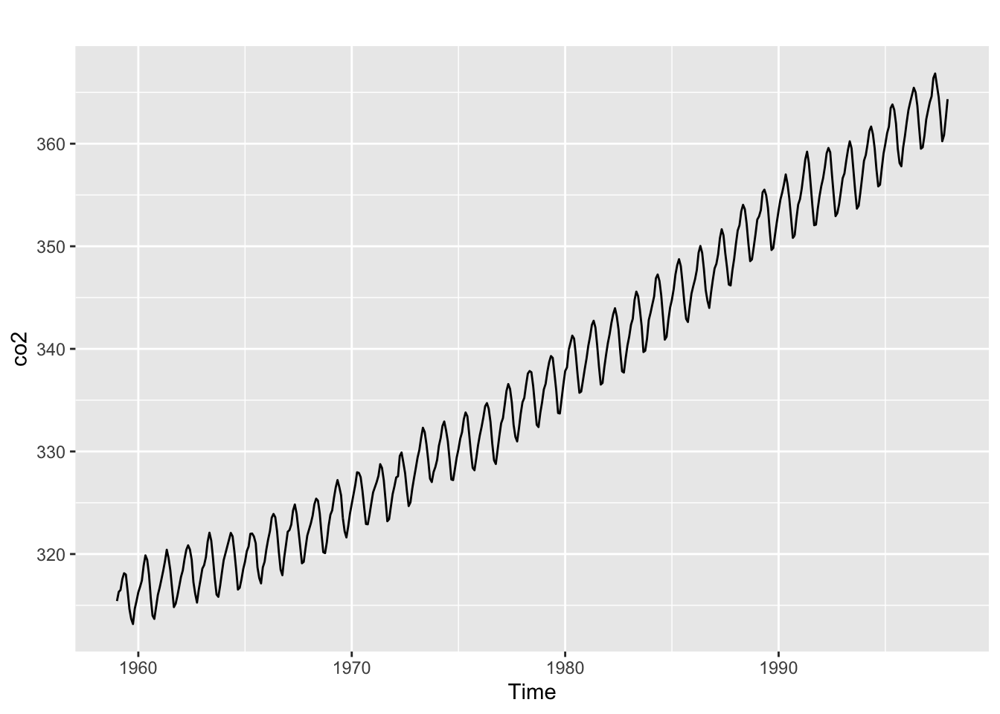
BoxCox.lambda(co2)[1] -0.03432107autoplot(co2) + autoplot(log(co2))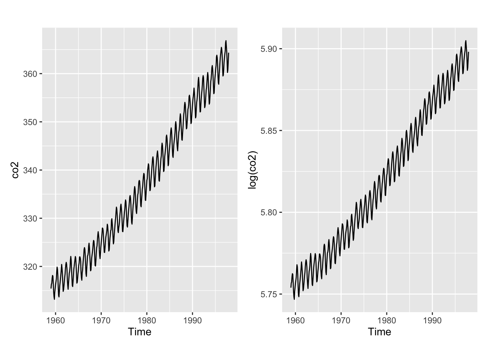
Une tendance linéaire mais la saisonnalité n’est pas proportionnelle au niveau Aucune transformation n’est nécessaire. La méthode Guerrero donne \(\lambda = 0,0\) (log) sans que cela change les résultats.
autoplot(usdeaths)
BoxCox.lambda(usdeaths)
autoplot(usdeaths) + autoplot(BoxCox(usdeaths, 0))Pas de tendance : aucune transformation n’est nécessaire. La méthode Guerrero donne \(\lambda = 0,0\) (log) sans que cela change les résultats.
autoplot(usgdp)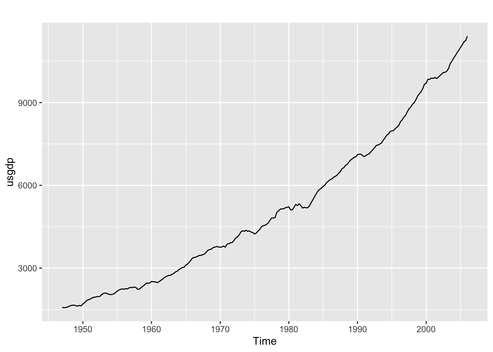
On observe une tendance exponentielle : il peut être utile de faire une transformation
autoplot(BoxCox(usgdp, 0))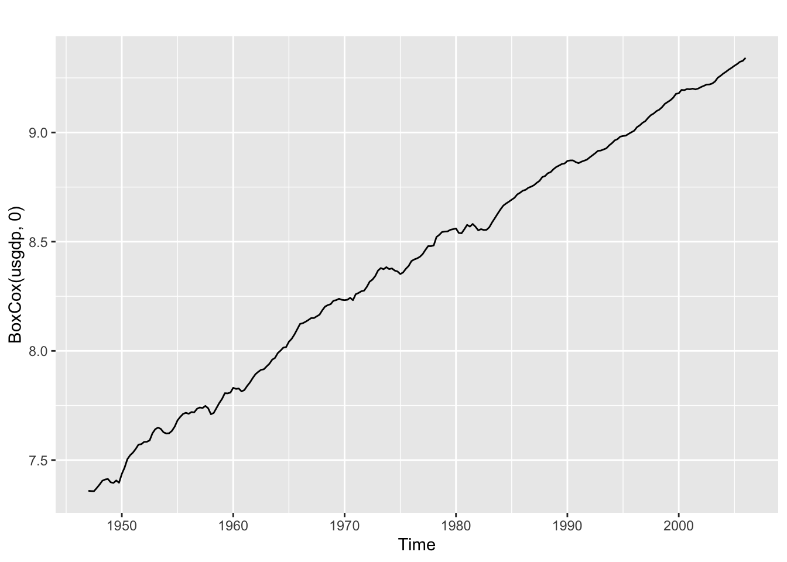
La transformation en log semble suffisante, peut-être légèrement trop forte. La méthode Guerrero donne \(\lambda = 0,36\).
BoxCox.lambda(usgdp)[1] 0.366352autoplot(BoxCox(usgdp, 0)) +
geom_smooth(method='lm', formula= y~x, size = 0.5) +
autoplot(BoxCox(usgdp, BoxCox.lambda(usgdp))) +
geom_smooth(method='lm', formula= y~x, size = 0.5)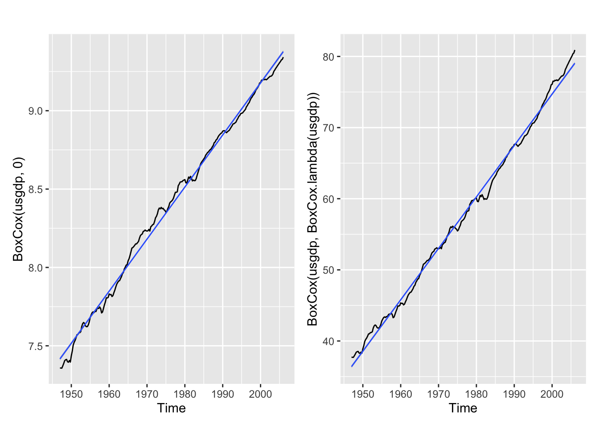
Exercice
Pourquoi la transformation de Box-Cox n’est pas adaptée à la série expsmooth::cangas ?
autoplot(cangas)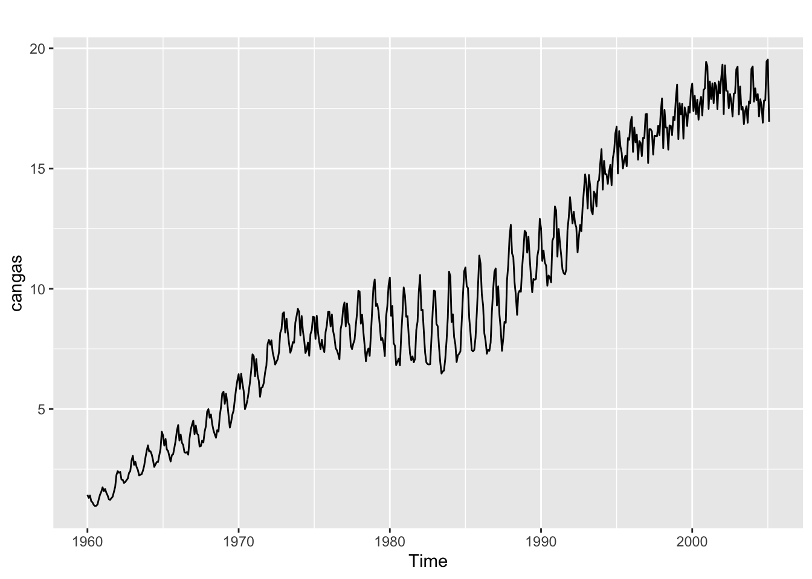
Solution
On observe une tendance générale à la hausse et une saisonnalité. En revanche cette saisonnalité n’est pas proportionnelle au niveau : entre 1960 et 1970 elle semble proportionnelle au niveau mais entre 1975 et 1990 le niveau de la série est globalement stable mais la variance augmente.
La transformation de Box-Cox n’est adaptée que lorsque la variabilité de la série est proportionnelle à son niveau.
Les précédents exercices portaient uniquement les fonctions de forecast. Pour appliquer la méthode Guerrero avec un objet tsibble on peut utiliser la fonction features(., features = guerrero) :
aus_arrivals %>%
features(features = guerrero)# A tibble: 4 × 2
Origin lambda_guerrero
<chr> <dbl>
1 Japan 0.254
2 NZ 0.332
3 UK -0.0511
4 US 0.190 aus_arrivals %>%
features(features = guerrero) %>%
pull(lambda_guerrero)[1] 0.25392556 0.33202070 -0.05108145 0.19043694